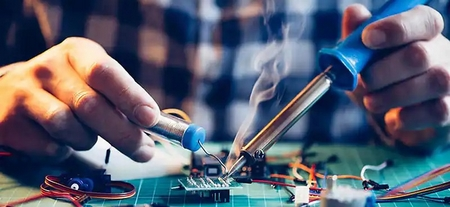
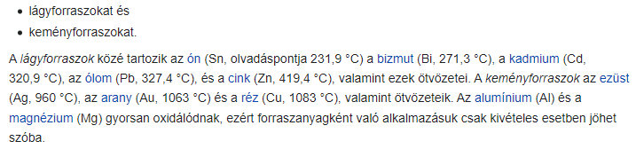
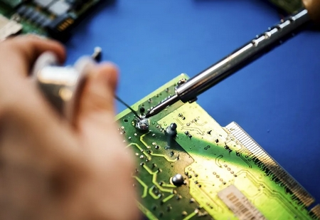
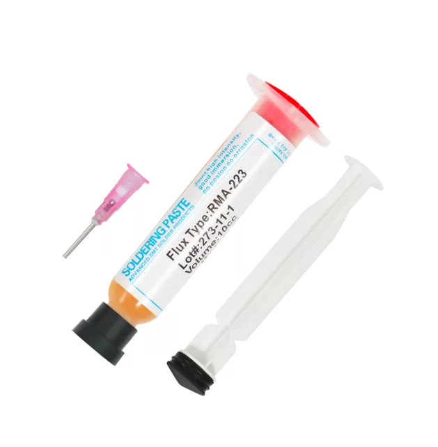
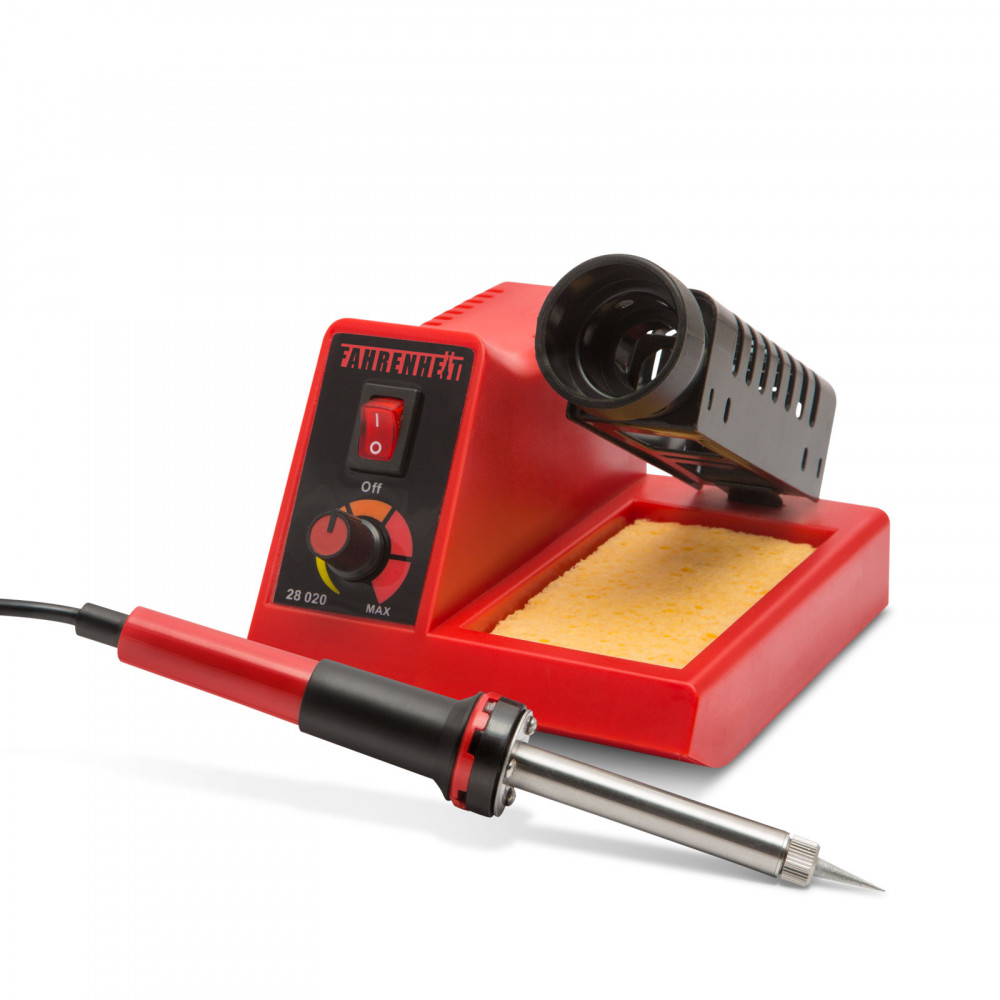
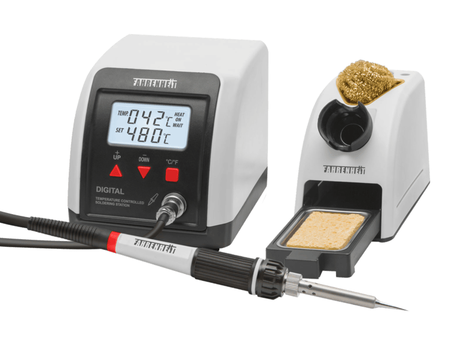
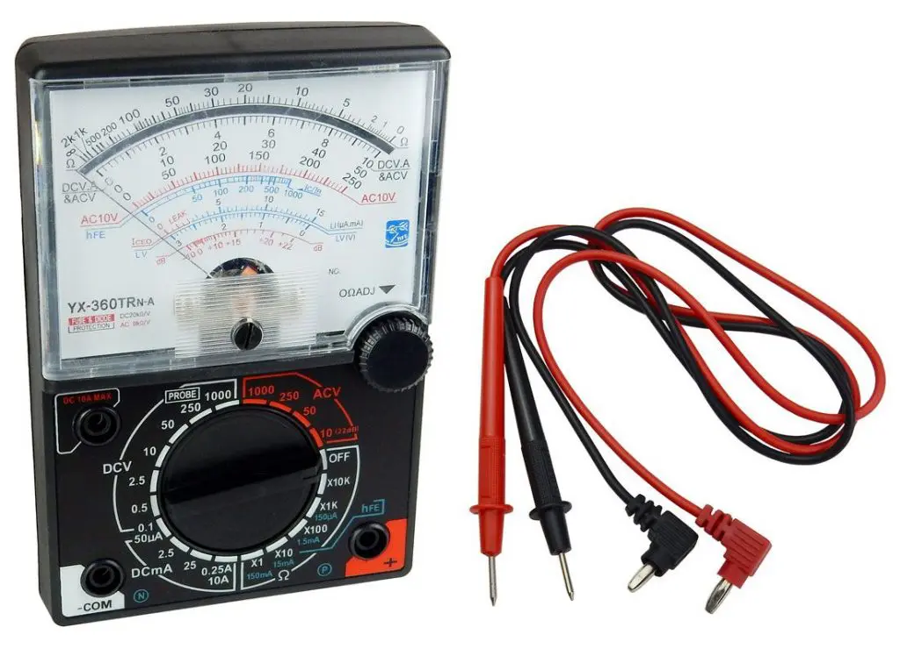
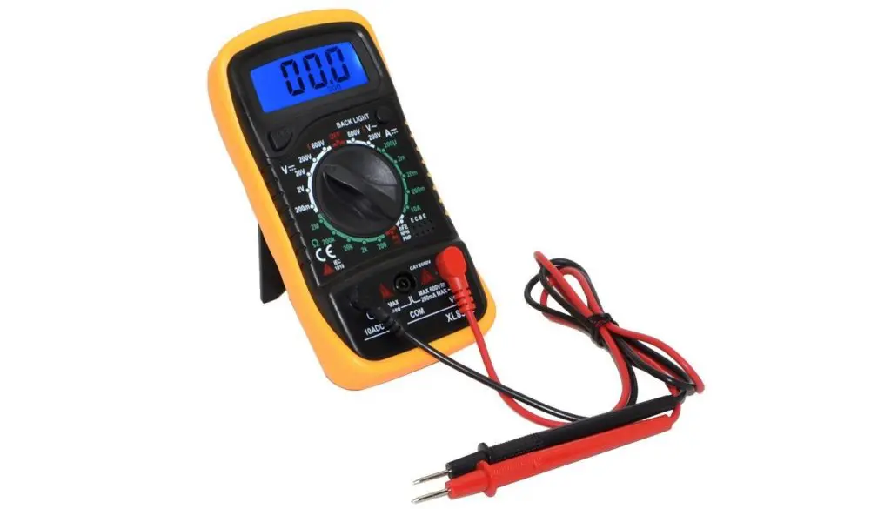
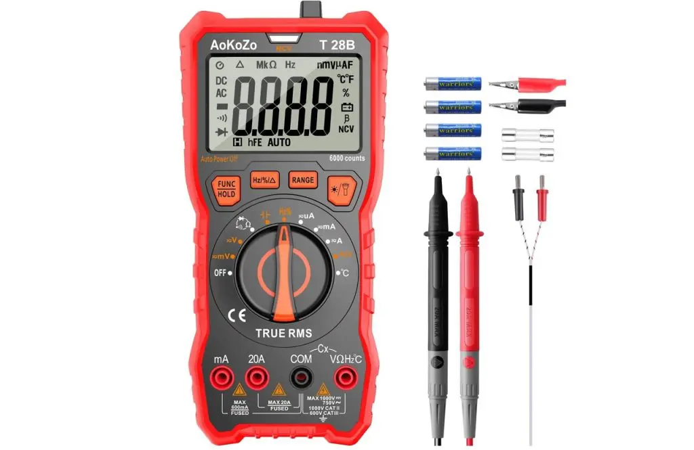

A tantárgy oktatásának alapvető célja azoknak az ismereteknek a megalapozása, gyakorlatba ültetése, amelyek képessé teszik a tanulót arra, hogy megértse a szakmájában előforduló elektronikai alkatrészek alkalmazásának célját és működési elvét. A tanuló a tantárgy tanulása során biztos alapokat szerez alapvető elektronikai kapcsolások értelmezéséhez, valamint adott probléma és a megoldásához vezető út felismeréséhez. A téma feldolgozása során a tanulók megismerik a környezeti jellemzők számítógépes megfigyelésének lehetőségeit, az adott jelenséghez megfelelő érzékelők kiválasztásának szempontjait. Jártasságot szereznek a számítógépes mérésekben, valamint megismerkednek a virtuális műszerek felépítésével és alkalmazásával. A foglalkozássorozat vége felé megjelenő, közvetlenül kipróbálható kísérletek az adatátviteli technikák megismerését készítik elő, amikről a tanulók a későbbiekben tanulnak majd. Ebben a tanulási egységben nem az a cél, hogy a diákok megismerjék az alkalmazott elektronikai alkatrészek működésének fizikai alapjait, hanem hogy megtapasztalják, léteznek bizonyos elektronikai építőelemek, amelyek segítségével a környezet paraméterei mérhetők, vagy amelyek befolyásolni tudják a környezet jellemzőit. Az elsődleges cél az alkotás, a megtapasztalás, a vizsgálódás. A mért adatok értelmezési, kiértékelési képességének kialakulása, a következtetések levonása megalapozza további szakmai tanulmányaikat. A tantárgy oktatásának fontos feladata az is, hogy fejlessze a tanulók problémamegoldó készségét, kialakítsa bennük az új ismeretek megszerzése iránti igényt és az azok elsajátításához szükséges készségeket. Minden témakört - még az alapismereteket is - célszerű méréssel szemléltetni, hogy a tanulók átlássák a feldolgozandó téma gyakorlati jelentőségét és kapcsolatát a választott szakmával.
A tanulók megismerkednek alap áramköri elemekkel (ellenállás, kondenzátor, tranzisztor, LED stb.) ezekből előre elkészített (próba) panelen egyszerűbb áramköröket építenek forrasztásos technológiával. Ezen áramkörökön végeznek méréseket bizonyítva az elektronika alaptörvényeit.
A tananyag kifejtése során jól alkalmazhatók a National Instruments iskolák számára elérhető hardver-, illetve szoftvereszközei, a tematika is ezekhez igazodik. A feldolgozási egységek azonban csak minták, szabadon átültethetők Raspberry Pi, Arduino környezetre és az ezekhez kapható készletekre. A mintaként kidolgozott tematika segíti a tanulókat, hogy iparban is alkalmazott megoldásokat ismerhessenek meg.
A mintatematika szerint haladva minden foglalkozás esetében szükséges eszközök az osztálytermi LabVIEW-fejlesztő és -futtató környezet, diákonként egy myDAQ hardver és szenzorkészlet, csavarhúzó, multiméter. A foglalkozási egységek hozzájárulnak a munkaerőpiacon elvárt készségek kialakulásához, a szakmai szókincs, valamint a csapatmunkára való képesség fejlődéséhez.
A tanulók megismerkednek a jelek, jelhordozók szerepével, a jelek megjelenési formáival, a jelkondicionálás szükségességével. Megismerik a villamos feszültség fogalmát és feldolgozását, a nem villamos jelek elektronikus feldolgozhatóságát, a jelátalakítók szerepét. Megtanulnak információs egységet létrehozni és vezetékes formában továbbítani. Megismerik a vezeték nélküli jelátvitel lehetőségét, a vivőfrekvencia szerepét. Az adatmegjelenítők alkalmazásával megtanulják értelmezni a beolvasott jelek alakját, a változások jellemzőit, és következtetéseket tudnak levonni a környezeti jellemzők változásait követő jelalakok alapján.
A témakörhöz az alábbi eszközök használata javasolt: felszerelt és internet-hozzáféréssel rendelkező számítógéplabor (aktív tábla, számítógép, projektor), amelyben rendelkezésre állnak a témakör tanításához szükséges szoftverek (LabVIEW), valamint a vonatkozó hardverelemek (myDAQ, szenzorkészlet, csavarhúzó, multiméter). Arduino valamint RaspberryPI esetén az eszköz honlapján megtalálható, szabadon letölthető fejlesztői kör- nyezetek, valamint az eszközhöz kapható kit szerelési egységcsomagok.
forrasztás: a hegesztéshez hasonlóan, fémek közötti oldhatatlan kötés létrehozására alkalmas eljárás.
A forrasztás a diffúziós kötés egyik fajtája, a kötést azonban a hegesztéssel ellentétben az alapanyagok megolvadása nélkül lehet létrehozni.
A forrasztás mindig egy, az alapanyagtól különböző, kisebb olvadáspontú anyaggal - forraszanyaggal - történik.
Igen jól forrasztható valamilyen fémmel egy alapanyag akkor, ha a forraszanyag és az alapfém a forrasztás hőmérsékletén oldják egymást. Például a réz az ezüstöt oldja, így a réz ezüsttel jól forrasztható. Ezzel szemben sem az ezüst a vasat, sem a vas az ezüstöt nem oldja, a vas az ezüsttel mégis jól forrasztható.

forraszanyag: forrasztáskor a szilárd állapotban maradó fém felülete tiszta kell legyen, a forraszanyagnak nem szabad olyan nem fémes szennyezéseket tartalmazni, amelyek a fémes kötést akadályoznák.
A forrasztás másik fontos követelménye, hogy a forraszanyag jól nedvesítse a forrasztandó felületet. Ez alatt azt kell érteni, hogy a forraszanyagnak jelentősebb túlhevítés nélkül könnyen szét kell terülnie az alapfém felületén.
Forrasztás céljára sokféle fém használható, alapvető követelmény azonban, hogy a forraszanyag az alapanyagnál kisebb olvadáspontú legyen. Mivel a vas (acél) a technikailag leginkább elterjedt fém, a forraszanyagokat a vas szempontjából szokás csoportosítani. Ebből a szempontból megkülönböztetnek:

forrasztás hőforrásai:
A lágyforrasztáshoz hőforrásként legtöbbször a forrasztópákát használják. A forrasztópákákat változatos formákban készítik. Az egyik pákakialakítás egy nyéllel ellátott réztömb. A réznek nagyon jó a hővezető képessége és nagy a hőkapacitása, így a fejben tárolt hőmennyiséggel a forrasztóanyag megolvasztható. Az ilyen rendszerű forrasztópákákat kisméretű kályhákban szokás felmelegíteni. A kályha bármilyen fűtésű lehet, gyakran egyszerű gázláng.
Keményforrasztáshoz hegesztőpisztolyt szokás használni, de a forrasztáshoz nem szükséges olyan nagy hőmérséklet, mint a hegesztéshez. Léteznek külön forrasztópisztolyok is, amelyek a hegesztőpisztolyokhoz hasonlóan gázlánggal működnek, azonban a lángjuk kisebb hőmérsékletű és kevésbé „kemény”.
A forrasztólámpa egy speciális benzinlámpa, amit hordozhatósága miatt a bádogosok használnak előszeretettel a páka, vagy közvetlenül a forrasztandó darabok melegítésére.

folyasztószer: Forrasztáskor a folyatószerek feladata kettős. Egyrészt megtisztítják a felületet a szennyezőktől, másrészt megvédik a forrasztás helyét a forrasztási hőmérsékleten bekövetkező oxidációtól.
A folyatószerekkel szemben támasztott követelmények közül az a legfontosabb, hogy kisebb olvadáspontúak legyenek, mint a forraszanyagok.
Lágyforrasztáshoz a gyakorlatban legjobban bevált folyatószer a cink-klorid és ammónium-klorid elegye. Ezek meglehetősen radikális korrozív anyagok, amelyeket a forrasztás után maradéktalanul el kell távolítani.
A keményforrasztáshoz bóraxot vagy öbusszát használnak.
Elektronikai forrasztáskor általában fenyőgyantát (kolofónium) használnak folyatószernek. A gyantából, a forrasztás hőfokán elbomolva, kellemes illatok mellett gyenge sav képződik, amely a forrasztás során a dezoxidációt elvégezve maradéktalanul eltűnik, így a felületről nem szükséges külön eltávolítani.

forrasztó állomás: egy folyamatos hőmérséklet szabályozással rendelkező eszköz mely egy tápegységből, vezérlő áramkörből (opcionálisan szabályozható hőmérséklettel és kijelzővel) és egy forrasztó pákából, vagy forrasztó hegyből (hőmérséklet érzékelővel) áll.
Az állomás alap esetben egy tartóval is rendelkezik, rá tudjuk helyezni a forrasztó pákát, ha nem használjuk, és egy tisztító szivacsot is, mellyel a pákahegyre égett forraszanyagot tudjuk leszedni.
Lehetnek analóg és digitális kialakításúak.


multiméter: egy olyan elektronikus eszköz, amely lehetővé teszi a különböző elektromos mennyiségek mérését AC / DC áramkörökben. Például mérheti a feszültségeket, az intenzitást, a teljesítményeket, az ellenállásokat, a kapacitásokat stb.
Néhány olyan extra funkciót is tartalmaz, mint például a tranzisztorok ellenőrzése, nyitott áramkörök (folytonosság) stb. Ezért ismerik őket poly vagy multi néven, mivel több dolgot képesek mérni.


A multiméter részei:
